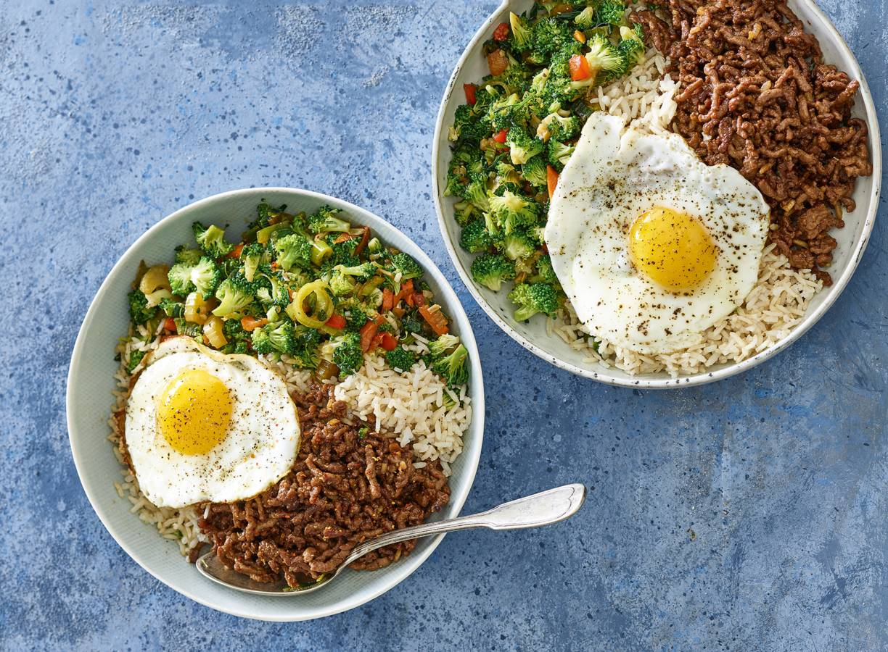

3 Lekkere recepten

Ingredienten
-
150 g zilvervliesrijst
-
1 teen knoflook
-
2 el arachideolie
-
200 g half-om-halfgehakt
-
0.5 tl chilivlokken
Berdeiding
-
Breng een ruime pan water aan de kook en voeg de rijst en eventueel zout toe. Breng opnieuw aan de kook en kook op laag vuur in 8 min. gaar. Draai het vuur uit, giet af en laat met de deksel op de pan staan tot gebruik.
-
Breng ondertussen voor de broccoli nog een pan met weinig water aan de kook. Maak de knoflook schoon en snijd fijn. Verhit de helft van de olie in de wok of hapjespan en roerbak het gehakt met de helft van de knoflook, chilivlokken en ketjap in 6 min. krokant en gaar. Neem het vlees uit de pan (maak de pan nog niet schoon) en houd het vlees warm op een bord onder aluminiumfolie.
-
Snijd ondertussen de broccoli in kleine roosjes van max. 1 cm. Schil de stronk en snijd in kleine stukjes. Voeg als het water kookt de broccoli toe en kook 2 min. Giet af.
-
Verhit de rest van de olie in de eerder gebruikte wok of hapjespan en roerbak de broccoli met de rest van de knoflook 2 min. op hoog vuur. Voeg de gembersiroop, sojasaus en soepgroente toe en roerbak nog 1 min.
-
Verhit ondertussen de koekenpan met antiaanbaklaag en bak de eieren.
-
Verdeel de rijst over diepe kommen. Leg langs de randen van de kom de groenten en het gehakt apart van elkaar. Leg het ei erop. Bestrooi eventueel met peper en serveer.